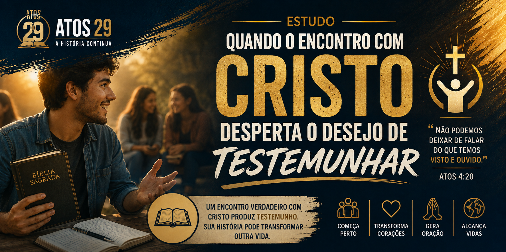

Capítulo 01 Quando Eu Quis Falar de Jesus para Todos

Quando Eu Quis Falar de Jesus para Todos
Quando o encontro com Cristo desperta o desejo de testemunhar
“Pois nós não podemos deixar de falar das coisas que temos visto e ouvido.”
A Experiência
Pouco tempo depois da minha conversão, algo havia mudado completamente dentro de mim. Eu estava tão apaixonado por Jesus que desejava falar d'Ele para todas as pessoas. Eu ainda estava aprendendo muitas coisas, mas tinha uma certeza: Jesus havia transformado completamente a minha vida.
Ouça esta experiência
Ouça a narração completa deste capítulo.
Leia em PDF
Leia ou guarde este capítulo em formato PDF.
Abrir PDF